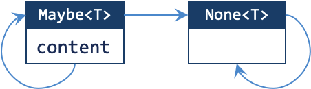
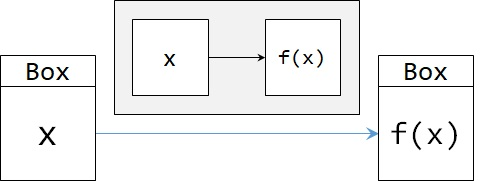
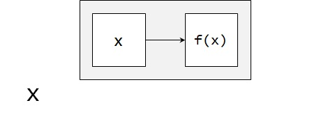
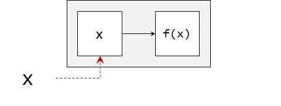
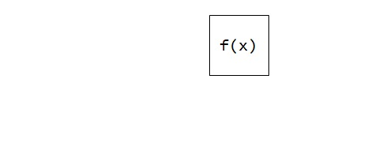
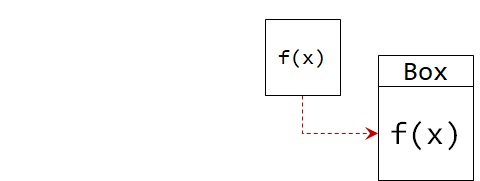
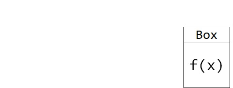

Lab 5: Call me Maybe
Basic Information
- Deadline: 17 October 2023, Tuesday, 23:59 SST
- Marks: 20
- Weightage: 2%
Prerequisite
- Completed Lab 4.
- Caught up to Unit 29 of Online Notes.
Files
In the directory, you should see the following files:
- Java Files:
cs2030s/fp/Producer.java: A template forProducer.cs2030s/fp/Consumer.java: A template forConsumer.cs2030s/fp/BooleanCondition.java: A template forBooleanCondition.CS2030STest.java: The main tester class.Test1.java-Test6.java: A tester.
Preliminary
This is a follow-up from Lab 4. In Lab 4, we have constructed a generic class Some<T>, which is a container for an item of type T. Beyond being an exercise for teaching about generics, Some<T> is not a very useful type. In this lab we are going to modify Some<T> into a more useful class. We are also going to build our own Java packages using these useful classes.
Java Package
Java package mechanism allows us to group relevant classes and interfaces under a namespace. You have seen two packages so far: java.util, where we import List and Arrays from. There is also java.lang where we import the Math class from. These are provided by Java as standard libraries. We can also create our package and put the classes and interfaces into the same package. We (and the clients) can then import and use the classes and interfaces that we provide.
Java package provides a higher-layer of abstraction barrier. We can designate a class to be used outside a package by prefixing the keyword class with the access modifier public. We can further fine-tune which fields and methods are accessible from other classes in the same package using the protected access modifier.
You can read more about java packages and the protected modifier yourself through Oracle's Java tutorial.
As a summary, the access levels are as follows.
| Modifier | Access from same class | Access from same package (or the same directory) |
Access from subclass (other directory) |
Access from other class (other directory) |
|---|---|---|---|---|
public |
||||
protected |
||||
private |
The table above is also the reason why we do not allow protected keyword in earlier labs. Unless we are creating a proper package with proper directory structure, protected offer no additional benefit and is equivalent to public. The class have to be created inside another directory to make full use of protected, which is what we are going to do in this lab.
We will create a package named cs2030s.fp to be used for this and the next few labs.
First, we need to add the line:
1 | |
on top of every .java file that we would like to include in the package.
The package name is typically written in a hierarchical manner using the "." notation. The name also indicates the location of the .java files and the .class files. For this reason, you can no longer store the .java files under labX-username directly. Instead, you should put them in a subdirectory called cs2030s/fp under labX-username.
To start, our cs2030s.fp package will contain the interface Transformer that you have written in Lab 4.
If you have set up everything correctly, you should be able to run the following in jshell (remember to always compile your code first!) from your labX-username directory:
1 | |
without error.
Task 1: More Interfaces
Now, we are going to add three more interfaces into our package:
Producer<T>is an interface with a singleproducemethod that takes in no parameter and returns a value of typeT.Consumer<T>is an interface with a singleconsumemethod that takes in a parameter of typeTand returns nothing.BooleanCondition<T>is an interface with a singletestmethod that takes in a parameter of typeTand returns a primitivebooleanvalue.
Sample Usage
If you have set up everything correctly, you should be able to run the following in jshell without errors (remember to always compile your code first!).
1 2 3 4 5 6 7 8 9 10 11 12 13 14 15 | |
Task 2: Call me Maybe
Now, we are going to implement a type called Maybe<T> in the cs2030s.fp package. Our Maybe<T> is an option type, a common abstraction in programming languages (java.util.Optional in Java, option in Scala, Maybe in Haskell, Nullable<T> in C#, etc) that is a wrapper around a value that might be missing. In other words, it represents either some value, or none.
Step 0: Packaging Some
- Copy your implementation of
Some.javaintolabX-username/cs2030s/fpdirectory. - Add
package cs2030s.fp;as the first line onSome.java.
We will create our Maybe<T> class as part of cs2030s.fp package.
Step 1: Inner Class
- Rename your
Some.javaintoMaybe.java. - Rename the class
Some<T>intoMaybe<T>. This entails some other corrections too:- Rename all occurrences of
SomeintoMaybeincluding the private constructor and the return type. - Do NOT change the name of the factory method
some.
- Rename all occurrences of
If you have done this correctly, your directory structure should look something like the following:
1 2 3 4 5 6 7 8 9 10 11 12 | |
Additionally, you should be able to compile both Maybe.java and Transformer.java from within the cs2030s/fp directory using the following command without any warning.
1 | |
You can test this changes to Maybe<T> more comprehensively by running the following from your labX-username directory. This test case is simply the same as Test2.java from Lab 4 renamed to fit the current Lab 5.
1 2 | |
There shouldn't be any compilation warning or error when you compile Test1.java and all tests should prints ok.
Step 2: Adding None Class
Now we want to loosen the restriction of having no null value for our input. We want to be able to handle null input to our factory method Maybe::of. To do this, we want to first create a private static nested class called None<T>. The types None<T> is an internal implementation details of Maybe<T> and must not be used directly by the client. Hence, it must be declared private. Here is the requirement for None<T>.
None<T>is a generic private inner class that inherits fromMaybe<T>.- Why is it generic if it represents
nullvalue? Because we will need to be able to re-convert this back to theMaybe<T>with the sameTlater on.
- Why is it generic if it represents
None<T>has no instance field.None<T>has private constructor that takes in no argument.None<T>overrides theequalsmethod fromMaybe<T>.- Any instance of
None<T>is equal to any other instance ofNone<T>. - We also need to modify
Maybe<T>to include a case where we are comparingMaybe<T>withNone<T>. In such cases, it should returnfalse.
- Any instance of
None<T>overrides thetoStringmethod fromMaybe<T>.- It simply prints
[].
- It simply prints
None<T>overrides themapmethod fromMaybe<T>.- This simply returns itself.
- You may add
@SuppressWarningshere with explanation on why it is safe.
None<T>(and by extensionMaybe<T>) must be immutable up toT.
Step 3: Handling Nothing in Maybe
After you have created the None<T> class, we want to start handling the possibility that we create Maybe<T> with null value.
- Add the method
none()that returns an instance ofNone<T>.- There should only be ONE instance of
None<T>such that multiple calls tonone()should return the same instance. - You may add
@SuppressWarningshere with explanation on why it is safe.
- There should only be ONE instance of
- Add the method
ofthat returns:- an instance of
None<T>if the input isnull. - an instance of
Maybe<T>(that is notNone<T>) if the input is notnull.
- an instance of
- Modify the
mapmethod inMaybe<T>such that it returns:- an instance of
None<T>if the result of applying the transformer is anullvalue. - an instance of
Maybe<T>(that is notNone<T>) if the result of applying the transformer is not anullvalue.
- an instance of
Notice how the map may transform a Maybe<T> into a None<T> but never the other way around. Here, by Maybe<T>, we really meant the Maybe<T> that is not None<T>. This can be captured as the following "state diagram".

In fact, the arrow in the diagram above can be either map, filter (Task 3), or flatMap (Task 4).
Generally, the step for map method can be summarized below.
- Open the "box".
- Apply the function.
- Obtain the result.
- Put into new "box".
- Return the result.
An illustration is shown below.


By invoking map, you are already inside the "box". So the "box" is already opened for you.




Sample Usage #1
The sample usage for none() and of() is shown below.
1 2 3 4 5 6 7 8 9 10 11 12 13 14 15 16 17 18 19 20 21 22 23 24 25 26 27 28 29 30 31 32 33 34 | |
You can test this addition to Maybe<T> more comprehensively by running the following from your labX-username directory.
1 2 | |
There shouldn't be any compilation warning or error when you compile Test2.java and all tests should prints ok.
Sample Usage #2
The sample usage for map() is shown below.
1 2 3 4 5 6 7 8 9 10 11 12 13 14 15 16 17 18 19 20 21 22 23 24 25 26 27 28 29 30 31 32 33 34 35 36 37 38 39 40 41 42 43 44 45 46 47 48 49 50 51 52 53 54 55 56 57 | |
You can test this addition to Maybe<T> more comprehensively by running the following from your labX-username directory.
1 2 | |
There shouldn't be any compilation warning or error when you compile Test3.java and all tests should prints ok.
Task 3: Filtering
We now add the method filter to Maybe<T>.
- Add the method
filterinMaybe<T>that takes inBooleanCondition<..>(type parameter omitted) as a parameter.- If the content of
Maybe<T>isnullor failed the test (i.e., the call totestreturnsfalse), returnNone<T>. - Otherwise, leaves
Maybeuntouched and returnMaybeas it is.
- If the content of
- Override the method
filterinNone<T>.- Always returns a
None.
- Always returns a
Sample Usage
1 2 3 4 5 6 7 8 9 10 11 12 13 14 15 16 | |
You can test this addition to Maybe<T> more comprehensively by running the following from your labX-username directory.
1 2 | |
There shouldn't be any compilation warning or error when you compile Test4.java and all tests should prints ok.
Task 4: flatMap
Consider a Transformer that might return a Maybe<T> itself (as wordToMaybeInt above). Using map on such a Transformer would lead to a value wrapped around a Maybe twice. We want to add a method that is not doing this.
- Add a method
flatMapinMaybe<T>that takes in aTransfomer<..>as the parameter.- The
Transformerobject transforms the value of typeTinMaybe<T>into a value of typeMaybe<U>, for some typeU. - The method
flatMap, however, returns a value of typeMaybe<U>(instead ofMaybe<Maybe<U>>as in the case ofmap). - You may add
@SuppressWarningshere with explanation on why it is safe.
- The
- Override the method
flatMapinNone<T>.- Always returns a
None.
- Always returns a
Sample Usage
1 2 3 4 5 6 7 8 9 10 11 12 13 | |
You can test this addition to Maybe<T> more comprehensively by running the following from your labX-username directory.
1 2 | |
There shouldn't be any compilation warning or error when you compile Test5.java and all tests should prints ok.
Task 5: Back to T
Since Maybe is an abstraction for a possibly missing value, it would be useful to provide methods that decide what to do if the value is missing.
- Add a method
orElseinMaybe<T>that takes in aProducer<..>as the parameter.- Always return the content.
- Override the method
orElseinNone<T>.- Returns the value of type
Tproduced by theProducer.
- Returns the value of type
- Add a method
ifPresentinMaybe<T>that takes in aConsumer<..>as the parameter.- The
Consumerconsumes the content.
- The
- Override the method
ifPresentinNone<T>.- Do nothing.
Sample Usage
1 2 3 4 5 6 7 8 9 10 11 12 13 14 15 16 17 18 19 20 21 22 | |
You can test this addition to Maybe<T> more comprehensively by running the following from your labX-username directory.
1 2 | |
There shouldn't be any compilation warning or error when you compile Test6.java and all tests should prints ok.
Flexible Type
Make sure you use PECS principle to make the map method as flexible as possible. We have no explicit test case for this. You are encouraged to make your own test case.
Grading
This lab is worth 20 marks and contribute 2% to your Lab Assignment component. The marking scheme is as follows:
| Component | Sub-Component | Marks |
|---|---|---|
| Correctness | 16 marks | |
| Style | 4 marks |
Correctness mark will be about general correctness with more manual checking of types satisfying PECS, doing the proper check (e.g., null check), etc. This means that each TestX.java may carry different weights. While we try to give you all the possible tests, there may be some tests we missed. You should not hardcode any test cases.
Additionally, if your code cannot compile for any reason, you will get 0 mark for the lab. We will check for compilation with the following command run from cs2030s/fp directory.
1 | |
We may make additional deductions for other issues or errors in your code such as run-time error, failure to follow instructions, failure to correct errors from Lab 4, not commenting @SuppressWarning, misuse of @SuppressWarning (unnecessary, not in smallest scope, etc), etc.
Submission
To submit the lab, run the following command from the directory containing your lab 5 code.
1 | |
Please check your repo after running the submission script to ensure that your files have been added correctly. The URL to your repo is given after you run the submission script.
Do NOT Use Other Git Command
While you may be familiar with git commands, please do not use them. Please use only the submission script submit-labX to ensure that your submissions are recorded properly.